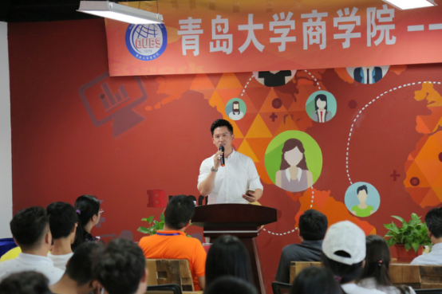

官方二维码
免费情感热线电话
4006-299-520

官方二维码
免费情感热线电话
4006-299-520

2017年9月18日，橘子情感负责人携公司优秀团队来到青岛大学商学院的活动现场， 举办了一场以商业创业为主题的精彩讲座。
本次讲座是由橘子情感与青岛大学商学院联合合作举办，意在为即将步入社会的新 兴力量给出正确、实用、正能量的创业就业建议。青岛大学商学院的领导对于此次 讲座抱有极高的重视和期待，并表示能与橘子情感公司合作举办本讲座感到荣幸和 开心。
参与本次讲座的青岛大学商学院的学生早早来到了活动现场，秩序井然，耐心等待 活动的开始。其间有同学表示，对于本次活动的举办，自己抱有极大的兴趣和期待， 认为此次活动为即将步入社会的青年人提供了一个良好的交流平台，并希望自己可 以通过本次活动积累更多的工作经验，解决自己对于社会工作的一些难题和困惑， 对于此类活动的举办表达了感谢和赞赏。
本次讲座的开场，首先由橘子情感的领头团队向同学们作自我介绍，并为在座各位 学子讲述了他们创业初期的经历。橘子情感的演讲人员表示，创业初期虽坎坷重重， 但坚持下去，迎难而上，一定会得到圆满的结局。橘子情感希望以此倡导年轻学子 们在遇到困难时不要退缩，培养自己愈挫愈勇的精神，坚持初心，方得始终。
其次，橘子情感的领头团队们也针对即将步入社会的新生力量给出了一些实用的工 作建议，通过总结讲述自己在创业和工作阶段的经验教训，为同学们打好预防，希 望同学们能够通过本次讲座一系列的分享，在步入社会后能够少走弯路，并祝福大 家在不久之后的创业就业之路上走的顺利、长远。
整场讲座气氛融洽，同学们也热情高涨。橘子情感的团队通过幽默风趣又动人心弦 的演讲，引起在场同学极大的兴趣。为了更好地服务同学，实现具体情况具体分析 的一对一式分享，橘子情感公司特意在现场为同学们设立了自由提问的环节，并针 对同学们的问题作出耐心的回复，致力做到一对一的就业困惑答疑，言语之间体现 了对社会新生力量的高度赞许和美好期盼。
在本场讲座的最后，青岛大学商学院的领导为同学们做了演讲总结，对于橘子情感 积极承担社会责任、热心公益事业的行为表达了极高的认可和赞许，并表示虽然讲 座已经结束，但橘子情感的责任精神会继续发扬传承，也祝福橘子情感的未来发展 更加辉煌。
在现今这个互联网发展迅速的社会，随着各种新兴行业的兴起，各行业领域都出现 了鱼龙混杂的负面现象。橘子情感公司作为一支认真踏实而又充满朝气活力的团队， 出淤泥而不染，在互联网行业一步一个脚印走到今天，站稳了自己的商业脚跟，始 终以正能量感染着身边的行业和伙伴，在此基础上，不忘热心公益事业和承担社会 责任，以更高的视角为公司创立了良好的口碑，在业界有着极高的声誉。
本次讲座的举办，不仅体现了橘子情感的强烈的社会责任感强和高瞻远瞩的意识， 更体现了青岛大学商学院的领导、政府领导对本行业有着极高的重视。通过这类活 动的举办，可以促进不同行业之间的共通和合作，加深不同行业间的相互了解，为 接下来的商业学习和合作打下了良好的基础，营造了各行各业之间融洽、和谐的氛 围。
橘子情感的负责人表示，能够与青岛大学商学院这样的优秀高等学府合作，是对于 本行业和本公司在商界实力的极高的肯定，橘子情感一定不负众望，不骄不躁，带 领好自己的团队，踏踏实实走向更高更远的未来。
相信通过本次活动的举办，能够为当代大学生提供更多实质性的建议，为大学生的 创业就业打下了良好的基础；同时也为青岛大学商学院和橘子情感公司的未来合作 打下了坚实的契机。这样的义务活动既能促进行业间的交流发展，又能实现合作上 的双赢格局。希望在未来的日子里能够看到更多类似的活动举办，也祝福青岛大学 商学院和橘子情感公司的发展越来越好，为社会发展起到更加积极的带头作用。